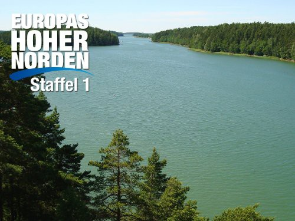

")
 
 IMDB-Wertung: 7.7 / 10
IMDB-Wertung: 7.7 / 10  Metascore:
Metascore: 
Feuerspeiende Vulkane, gigantische Eisberge, tiefe Fjorde, weiße Sandstrände und endlose Wälder. Skandinavien ist das Reich der Kontraste. Im Sommer ein nicht endendes magisches Licht und in den langen Wintern für Mensch und Tier ein Leben am Limit. Für diese Reihe wurden mit modernster TV-Technik und in HD-Qualität die grandiosen und vielfältigen Landschaften des gesamten Nordens aus der Luft eingefangen. Mit dem besten Helikopterkamerasystem der Welt, der Cineflex-Kamera. Erstmals werden damit die Highlights Skandinaviens sowie Islands und Grönlands aus der Vogelperspektive gezeigt. Bilder von atemberaubender Schönheit sind entstanden. Für diese erste allumfassende Reihe über Skandinavien haben renommierte Dokumentarfilm-Regisseure eineinhalb Jahre lang mit ihren Kamerateams die Nordländer und Inseln bereist und ein einzigartiges Kaleidoskop von Bildern, Geschichten und Stimmungen eingefangen: eine erstmalige Gesamtpräsentation einer faszinierenden Welt am Polarkreis.
15 Folgen
01. Lofoten und Polarmeer
02. Kopenhagen und Malmö
03. Westnorwegen – Land der Fjorde
04. Südfinnland und Åland-Inseln
05. Stockholms Schären und Gotland
06. Jütland und Skagen
07. Island – Reich der Vulkane
08. Mittelschweden – Land der Elche
09. Südnorwegen und Oslo
10. Südschweden und Bornholm
11. Inselreich Dänemark
12. Grönland – Insel der Gletscher
13. Westschweden und Vänersee
14. Lappland und Finnmark
15. Mittelfinnland und Karelien
Jahr: 2011
Dauer: 42 Minuten
FSK:
Land: Deutschland Studio: ArteTonspuren:
Untertitel:
Auflösung: 720p (1280x720) Größe: 1198 MB
Genre: Dokumentation, TV-Serie
Regisseur: Wilfried Hauke, Sven Jaax, Carsten Prehn, Claas Thomsen
Drehbuch: Wilfried Hauke, Sven Jaax, Carsten Prehn, Claas Thomsen
Soundtrack:
Darsteller:
Datei: X:\Dokumentationen\Natur\Europas hoher Norden\Europas hoher Norden E01 Lofoten und Polarmeer.mkv seit 03.04.2019
Festplatte: HD Serien(SU-Z)+Dokus+Musik
 Es gibt insgesamt 35 Filme in der Gruppe 'Dokumentationen\Natur'
Es gibt insgesamt 35 Filme in der Gruppe 'Dokumentationen\Natur'